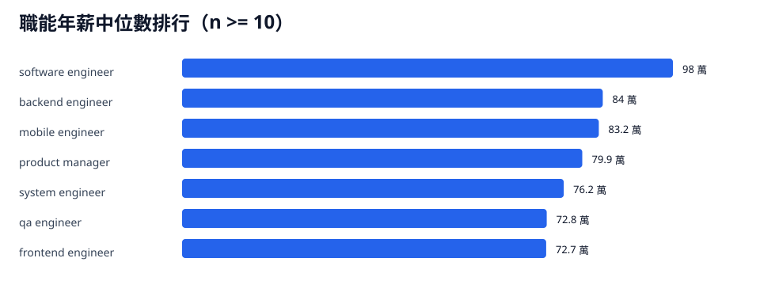

依標準化職稱比較薪資。主要排名圖只納入樣本數至少 10 筆的職能；所有職能仍保留在表格中並標示可信度。
分析見解
- software engineer 有 297 筆，是最大宗職能；年薪中位數 98 萬，高於 backend、frontend、mobile 等主要工程職能。
- 主要職能中，backend engineer 有 50 筆、frontend engineer 有 45 筆，但年薪中位數分別為 84 萬與 72.7 萬，低於 software engineer。
- 5 年前後差距以 product manager 最明顯：0-5 年中位數 70 萬、5+ 年 139.2 萬；software engineer 也從 78.2 萬拉到 128 萬。

圖中只呈現樣本數至少 10 筆的職能；排序以年薪中位數為主。
主要職能樣本
| 職能 | 樣本數 | 資料可信度 | 月薪中位數 | 月薪 P25-P75 | 年薪中位數 | 年薪 P25-P75 |
|---|---|---|---|---|---|---|
| software engineer | 297 | 可參考 | 7 | 5 - 10 | 98 | 67.5 - 140 |
| backend engineer | 50 | 可參考 | 6.2 | 5.5 - 7.4 | 84 | 72 - 98 |
| mobile engineer | 10 | 可參考 | 6 | 5.8 - 6.7 | 83.2 | 74.4 - 93.1 |
| product manager | 18 | 可參考 | 5.5 | 5 - 8 | 79.9 | 70 - 130.1 |
| system engineer | 12 | 可參考 | 5 | 4.6 - 5.6 | 76.2 | 70.8 - 99.2 |
| qa engineer | 11 | 可參考 | 6 | 4.8 - 6.5 | 72.8 | 61.4 - 90.5 |
| frontend engineer | 45 | 可參考 | 5.5 | 4.5 - 6.5 | 72.7 | 63.7 - 96 |
小樣本補充
| 職能 | 樣本數 | 資料可信度 | 月薪中位數 | 月薪 P25-P75 | 年薪中位數 | 年薪 P25-P75 |
|---|---|---|---|---|---|---|
| architect | 2 | 樣本過少 | 20.8 | 20.6 - 20.9 | 249 | 247.5 - 250.5 |
| product engineer | 1 | 樣本過少 | 15 | 15 - 15 | 210 | 210 - 210 |
| consultant | 3 | 樣本過少 | 14 | 11 - 15 | 182 | 147 - 235 |
| data scientist | 3 | 樣本過少 | 10 | 9.5 - 11.8 | 162 | 144 - 171 |
| devops engineer | 8 | 樣本偏少 | 9.8 | 8.5 - 11.6 | 136.5 | 102 - 162.8 |
| manager | 1 | 樣本過少 | 8 | 8 - 8 | 128 | 128 - 128 |
| engineering manager | 1 | 樣本過少 | 8 | 8 - 8 | 120 | 120 - 120 |
| machine learning engineer | 8 | 樣本偏少 | 7 | 7 - 8.1 | 107.8 | 91 - 116.7 |
| researcher | 9 | 樣本偏少 | 6.5 | 6.3 - 7.5 | 104 | 84 - 119 |
| data engineer | 7 | 樣本偏少 | 7.5 | 7 - 10.2 | 104 | 93.6 - 135 |
| system analyst | 3 | 樣本過少 | 6.4 | 5.5 - 7.1 | 96 | 77.2 - 103.8 |
| project manager | 3 | 樣本過少 | 7.2 | 5.6 - 10.1 | 93.6 | 73.8 - 137.8 |
| analyst | 5 | 樣本偏少 | 7 | 6 - 7.7 | 91 | 81 - 92.4 |
| ai engineer | 9 | 樣本偏少 | 7.5 | 6 - 8.2 | 90 | 81 - 112 |
| fullstack engineer | 6 | 樣本偏少 | 5.9 | 4.5 - 7.1 | 87.6 | 58.7 - 113.8 |
| designer | 1 | 樣本過少 | 6 | 6 - 6 | 72 | 72 - 72 |
| security engineer | 1 | 樣本過少 | 3.8 | 3.8 - 3.8 | 53.2 | 53.2 - 53.2 |